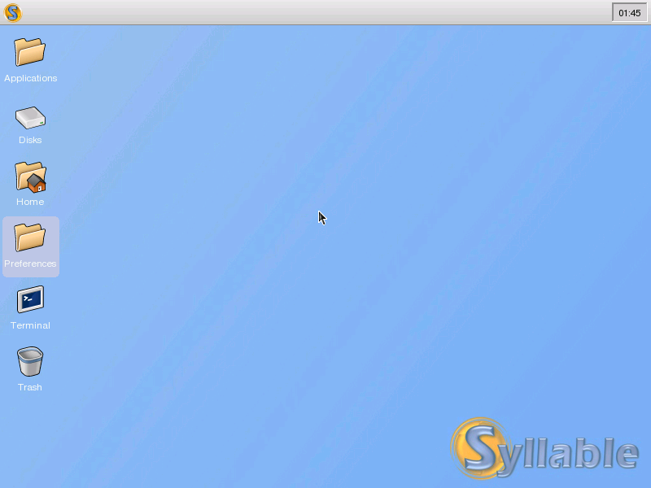

Using the Syllable Desktop

After logging in, the default desktop should look something like the above. On the screen are a number of things; we will tackle them in the order you're most likely to use them.
Syllable Menu
On the very top of the screen is a long grey bar with a small gold "S" logo (the Syllable logo) on the far left. This is the dock. The Syllable logo is a menu that you can use to control Syllable. If you click on the menu, you will see two entries: About and Quit. If you click on the About entry, a window with a bit of information about the Syllable project is displayed. If you click on the Quit entry, a window with several self-explanatory options for quitting Syllable appears.
Desktop Icons
On the desktop, you will find several icons, each with their own distinctive look and text label. To launch an icon, double-click on it with the left mouse button, just like in Windows. By default, the desktop has six icons:
- Applications - a folder for your applications
- Disks - a folder for the disks of your computer
- Home - a place to store your personal files
- Settings - a place to configure your Syllable experience
- Terminal - a text-based interface to a "bash" command-line shell
- Trash - where you drag files you want to delete
Let's double click on the Home icon, the one near the middle.
Running Application Icons
After you've doubled clicked the Home icon, you will notice that a new icon appeared on the dock (similar to the picture above). This is the task switcher portion of the dock – it shows icons representing your opened applications. If you move your mouse pointer over the home folder icon in the dock, it pops up a tooltip with the name of the window in it.
Click the minimize button on your Home window (the middle button in the cluster of buttons on the upper-right of the window) – notice the change in the dock icon? This is to let you know that your window is minimized, but still available for use. Click on the Home dock icon, and the window springs back to life.
Now double click the Terminal icon on the desktop. A command prompt window running the bash shell appears. Look at the top of the screen on the dock – you'll notice that two icons are now in the task switching portion, one for each application you have open.
If you want to do more with the icons on the desktop, right-click on them. A small menu appears with several options for manipulating that icon.
From this menu, you can open the icon with an application other than the default application, request information about the icon, rename the icon, move the icon to the trash, or permanently delete the icon. The Trash icon is the only exception to this rule; you can only empty the trash from its right-click menu.